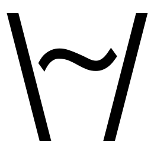

 Kefir.js 0.3.0 (changelog)
Kefir — is an Reactive Programming library for JavaScript inspired by Bacon.js and RxJS with focus on high perfomance and low memory usage.
Kefir has
GitHub repository, where you can
send pull requests,
report bugs,
and have fun reading
source code.
If you spot a typo or grammar error, or know how to improve this documentation, please help the project by filing an issue or sending a pull request.
Downloads (0.3.0)
| Main file | kefir.js | ~ 50 kb |
|---|---|---|
| kefir.min.js | ~ 7 kb (when gzipped) | |
| jQuery addon | kefir-jquery.js | ~ 1 kb |
| kefir-jquery.min.js | < 1 kb | |
| All files | kefir-0.3.0.zip | ... including documentation, demos, tests, source maps, etc. |
You can also get edge versions from GitHub (.zip), but use it at your own risk
NPM and Bower
npm install kefir
bower install kefir
Demos and examples
- Counter — most basic example
- Position — another basic example
- Custom stream — how to create custom event stream from any source of events
- Tree — Bacon.js vs Kefir.js perfomance comparison, and also nice tree animation demo
Also almost any code snippet below can be ran in browser console on this page.
So you can play with Kefir right now, just open up browser console.
Create a stream
emitterKefir.emitter()
Creates an emitter, that is ordinary stream, but also has additional methods:
.emit(value) and .end().
Then you can easily send events to stream via emit().
var emitter = Kefir.emitter(); emitter.log(); // log events to console (see log) emitter.emit(1); emitter.emit(2); emitter.end();
> [emitter] <value> 1 > [emitter] <value> 2 > [emitter] <end>
emitter: ----1----2----X
Emitter is the easiest way
to create general purpose stream,
but it doesn't give control over active state of stream
(see active state).
If you want to create general purpose stream and
have control over active state, you should use
fromBinder.
neverKefir.never()
Creates a stream, that already ended and will never produce any events.
var stream = Kefir.never(); stream.log();
> [never] <end:current>
stream: X
laterKefir.later(wait, value)
Creates a stream, that produces single value
after wait milliseconds then ends.
var stream = Kefir.later(1000, 1); stream.log();
> [later] <value> 1 > [later] <end>
stream: ----1X
intervalKefir.interval(interval, value)
Creates a stream, that produces same value
each interval milliseconds. Never ends.
var stream = Kefir.interval(1000, 1); stream.log();
> [interval] <value> 1 > [interval] <value> 1 > [interval] <value> 1 ...
stream: ----1----1----1----1---
sequentiallyKefir.sequentially(interval, values)
Creates a stream containing given values (array),
delivered with given interval in milliseconds.
Ends after all values delivered.
var stream = Kefir.sequentially(1000, [1, 2, 3]); stream.log();
> [sequentially] <value> 1 > [sequentially] <value> 2 > [sequentially] <value> 3 > [sequentially] <end>
stream: ----1----2----3X
repeatedlyKefir.repeatedly(interval, values)
Creates a stream, that produces given values (array),
with given interval in milliseconds.
When all values emitted, it begins to produce them again from start.
Never ends.
var stream = Kefir.repeatedly(1000, [1, 2, 3]); stream.log();
> [repeatedly] <value> 1 > [repeatedly] <value> 2 > [repeatedly] <value> 3 > [repeatedly] <value> 1 > [repeatedly] <value> 2 > [repeatedly] <value> 3 > [repeatedly] <value> 1 ...
stream: ----1----2----3----1----2----3----1---
fromPollKefir.fromPoll(interval, fn)
Creates a stream, that polls given fn function,
with given interval in milliseconds,
and emits values returned by fn.
Never ends.
var start = new Date();
var stream = Kefir.fromPoll(1000, function(){ return new Date() - start });
stream.log();
> [fromPoll] <value> 1001 > [fromPoll] <value> 2002 > [fromPoll] <value> 3004 > [fromPoll] <value> 4006 > [fromPoll] <value> 5007 > [fromPoll] <value> 6007 ...
stream: ----(1001)----(2002)----(3004)----(4006)---
withIntervalKefir.withInterval(interval, handler)
General method to create an interval based stream.
Creates a stream, that call given handler function,
with given interval in milliseconds.
Handler is called with one argument — emitter object
(it's similar to emitter stream
but not actualy a stream, you can read more about emitter object
here).
var start = new Date();
var stream = Kefir.withInterval(1000, function(emitter) {
var time = new Date() - start;
if (time < 4000) {
emitter.emit(time); // emit a value
} else {
emitter.end(); // end the stream
}
});
stream.log();
> [withInterval] <value> 1002 > [withInterval] <value> 2003 > [withInterval] <value> 3005 > [withInterval] <end>
stream: ----(1002)----(2003)----(3005)----X
You may call emitter.emit several times on each interval tick, or not call it at all.
fromCallbackKefir.fromCallback(fn)
Convert a fn function than accepts callback
as first argument to a stream.
Emits at most one value when callback is called then ends.
Fn will be called at most
once on first activation of a stream
(i.e. when first subscriber added).
var stream = Kefir.fromCallback(function(callback) {
// we use setTimeout here just to simulate some asynchronous activity
setTimeout(function() { callback(1) }, 1000);
});
stream.log();
> [fromCallback] <value> 1 > [fromCallback] <end>
stream: ----1X
Another example where we use an array form of function:
var url = 'http://pozadi.github.io/kefir/'; var stream = Kefir.fromCallback([jQuery.get, null, url]); stream.log();
> [fromCallback] <value> <!DOCTYPE html><html... > [fromCallback] <end>
stream: ----("<!DOCTYPE html><html...")XfromEventKefir.fromEvent(target, eventName, [transform])
Creates an stream from events on a DOM EventTarget or Node.JS EventEmitter
object, or an object that supports event listeners using on/off methods.
You can also pass optional transformation function like in
asKefirStream method.
var stream = Kefir.fromEvent(document.body, 'click'); stream.log()
> [fromEvent] <value> MouseEvent {dataTransfer: null, y: 474, x: 551 ...}
> [fromEvent] <value> MouseEvent {dataTransfer: null, y: 361, x: 751 ...}
> [fromEvent] <value> MouseEvent {dataTransfer: null, y: 444, x: 1120 ...}
stream: ----e--e----e---
Note that it uses addEventListener() for DOM events, which is not supported by IE8. If you need IE8 support use jQuery addon.
fromBinderKefir.fromBinder(subscribe)
Another method for creation general purpose stream,
along with emitter.
Unlike emitter it gives you control over
active state of the stream.
Creates stream which call subscribe function on each activation, passing to it an emitter object. Then you can call emiter.emit or emitter.end at any time to emit value or end the stream. Subscribe function can also return an unsubscribe function, that will be called on deactivation of the stream. Read about active state to understand what activation and deactivation means.
var stream = Kefir.fromBinder(function(emitter) {
console.log('!activation');
var i = 0;
var intervalId = setInterval(function() {
emitter.emit(++i);
}, 1000);
return function() {
console.log('!deactivation');
clearInterval(intervalId);
}
});
stream.log();
setTimeout(function() {
stream.offLog(); // turn off logging to deactivate stream
}, 3500);
> !activation > [fromBinder] <value> 1 > [fromBinder] <value> 2 > [fromBinder] <value> 3 > !deactivation
stream: ----1----2----3---
See also Custom stream demo as another fromBinder usage example.
Create a property
For now there is only one method that creates a property directly — constant(). But you can always convert any stream to a property using toProperty method.
constantKefir.constant(value)
Creates ended property, with specified current value.
var property = Kefir.constant(1); property.log();
> [constant] <value:current> 1 > [constant] <end:current>
property: 1X
jQuery addon
jQuery functionality comes as an addon for core Kefir.js library. In order to use it you should include addon JavaScript file, that can be found in downloads section.
asKefirStream$(...).asKefirStream(eventName, [selector], [eventTransformer])
Creates a stream from events on a jQuery object. This methods mimics
jQuery .on method with
two exceptions: it not accepts data argument, and instead of
handler function it accepts optional eventTransformer function,
which, if provided, will be called on each event with same arguments and
context as jQuery handler callback, and value returned by
eventTransformer will be emitted to Kefir stream.
If no eventTransformer provided, jQuery event object
will be emited in stream.
var clicks = $('body').asKefirStream('click');
clicks.log();
> [asKefirStream] <value> jQuery.Event {originalEvent: MouseEvent...}
> [asKefirStream] <value> jQuery.Event {originalEvent: MouseEvent...}
> [asKefirStream] <value> jQuery.Event {originalEvent: MouseEvent...}
clicks: --e----e--e---
Example with optional arguments:
var clicksOnContainer = $('body').asKefirStream('click', '.container');
clicksOnContainer.log('[clicks on .container]');
var clicksPageX = $('body').asKefirStream('click', function(e) {return e.pageX});
clicksPageX.log('[e.pageX]');
> [clicks on .container] <value> jQuery.Event {originalEvent: MouseEvent...}
> [e.pageX] <value> 643
> [e.pageX] <value> 15
> [clicks on .container] <value> jQuery.Event {originalEvent: MouseEvent...}
> [e.pageX] <value> 721
clicksOnContainer: ----( e )----------( e )--- clicksPageX: ----(643)---(15)---(721)---
asKefirProperty$(...).asKefirProperty(eventName, [selector], getter)$(...).asKefirStream(eventName, [selector], getter).toProperty(getter())Like asKefirStream, but instead of optional eventTransformer accepts
required getter function, which is called like eventTransformer
for each new event, but also called once without any argument
at moment when property is created.
Also unlike asKefirStream returns a property.
var cursorPosition = $('body').asKefirProperty('mousemove', function(event) {
if (!event) { // if no event passed then it's an "on creation" call
return [0, 0];
} else {
return [event.pageX, event.pageY];
}
});
cursorPosition.log();
> [asKefirProperty] <value:current> [0, 0] > [asKefirProperty] <value> [551, 1168] > [asKefirProperty] <value> [551, 1168] > [asKefirProperty] <value> [556, 1161] > ...
cursorPosition: ([0, 0])---([551, 1168])----([551, 1168])--([556, 1161])---
Convert observables
toPropertystream.toProperty([current])
Converts a stream to a property.
Accepts optional current argument, which becomes current value of the
property.
var source = Kefir.sequentially(100, [1, 2, 3]); var result = source.toProperty(0); result.log();
> [sequentially.toProperty] <value:current> 0 > [sequentially.toProperty] <value> 1 > [sequentially.toProperty] <value> 2 > [sequentially.toProperty] <value> 3 > [sequentially.toProperty] <end>
source: ----1----2----3X result: 0----1----2----3X
changesproperty.changes()
Converts a property to a stream.
If property has current value, it will be ignored
(stream's subscribers won't get it).
var source = Kefir.sequentially(100, [1, 2, 3]); var property = source.toProperty(0); var result = property.changes(); result.log();
> [sequentially.toProperty.changes] <value> 1 > [sequentially.toProperty.changes] <value> 2 > [sequentially.toProperty.changes] <value> 3 > [sequentially.toProperty.changes] <end>
property: 0----1----2----3X result: ----1----2----3X
Main observable* methods
* stream or property
onValueobs.onValue(fn)
Subscribes fn functions to values on an observable.
If onValue called on a property, and property has
current value, fn will be called
immediately with property current value as argument.
var emitter = Kefir.emitter();
emitter.onValue(function(x) { console.log('value:', x) });
emitter.emit(1);
emitter.emit(2);
> value: 1 > value: 2
offValueobs.offValue(fn)
Unsubscribes fn from values on an observable.
onEndobs.onEnd(fn)
Subscribes fn functions to ending off an observable.
If observable already ended, fn will be called immediately.
var emitter = Kefir.emitter();
emitter.onEnd(function(x) { console.log('stream ended') });
emitter.end();
> stream ended
offEndobs.offEnd(fn)
Unsubscribes fn from ending off an observable.
onAnyobs.onAny(fn)
Subscribes fn functions to both ending and values on an observable.
Callback is called with event object as argument. Each event object
contains three attributes — type, value, and current.
- type is a 'value' or 'end' string
- value is a value that was emitted, or undefined if type was 'end'
- current is a boolean, that equals true if callback was called with current value of a property, or on end of already ended observable
var emitter = Kefir.emitter();
emitter.onAny(function(event) { console.log('event:', event) });
emitter.emit(1);
emitter.emit(2);
emitter.end();
> event: Object {type: "value", value: 1, current: false}
> event: Object {type: "value", value: 2, current: false}
> event: Object {type: "end", value: undefined, current: false}
offAnyobs.offAny(fn)
Unsubscribes an onAny subscriber.
logobs.log([name])
Turns on logging of any events on an observable to browser console.
Accepts optional name argument that will be shown in log if provided.
var emitter = Kefir.emitter();
emitter.log('myEmitter');
emitter.emit(1);
emitter.emit(2);
emitter.end();
> myEmitter <value> 1 > myEmitter <value> 2 > myEmitter <end>
offLogobs.offLog([name])
Turns off logging. If .log was called with name argument,
offLog must be called with same name argument.
Modify an observable
All methods in this section create a new observable of same kind* from an original one. New observable applies some transformation to each event from original and emits result of transformation. In most cases a transformation is applied only to value events, but end event just passes through (i.e. new observable ends when original ends).
* For example if original observable was a stream, then new one also will be a stream. Same for properties. This rule has one exception for scan method, that always returns a property.
mapobs.map(fn)
Applies given fn function to each value from original observable
and emits value returned by fn.
var source = Kefir.sequentially(100, [1, 2, 3]);
var result = source.map(function(x) { return x + 1 });
result.log();
> [sequentially.map] <value> 2 > [sequentially.map] <value> 3 > [sequentially.map] <value> 4 > [sequentially.map] <end>
source: ---1---2---3X result: ---2---3---4X
mapToobs.mapTo(value)obs.map(function() {return value})On each value from original observable emits given value.
var source = Kefir.sequentially(100, [1, 2, 3]); var result = source.mapTo(5); result.log();
> [sequentially.mapTo] <value> 5 > [sequentially.mapTo] <value> 5 > [sequentially.mapTo] <value> 5 > [sequentially.mapTo] <end>
source: ---1---2---3X result: ---5---5---5X
pluckobs.pluck(propertyName)obs.map(function(x) {return x.foo})On each value from original observable emits value[propertyName].
var source = Kefir.sequentially(100, [{num: 1}, {num: 2}, {num: 3}]);
var result = source.pluck('num');
result.log();
> [sequentially.pluck] <value> 1 > [sequentially.pluck] <value> 2 > [sequentially.pluck] <value> 3 > [sequentially.pluck] <end>
source: ---({num: 1})---({num: 2})---({num: 3})X
result: ---( 1 )---( 2 )---( 3 )Xinvokeobs.invoke(methodName)obs.map(function(x) {return x.foo()})Just like .pluck, but instead of emitting value[propertyName]
it emits value[methodName](),
i.e. calls method methodName of each value object
and emits whatever it returns.
var source = Kefir.sequentially(100, [
{foo: function(){return 1}},
{foo: function(){return 2}},
{foo: function(){return 3}}
]);
var result = source.invoke('foo');
result.log();
> [sequentially.invoke] <value> 1 > [sequentially.invoke] <value> 2 > [sequentially.invoke] <value> 3 > [sequentially.invoke] <end>
source: ---({foo: ()=>1})---({foo: ()=>2})---({foo: ()=>3})X
result: ---( 1 )---( 2 )---( 3 )Xnotobs.not()obs.map(function(x) {return !x})Inverts every value from original observable using ! operator.
var source = Kefir.sequentially(100, [true, false, true]); var result = source.not(); result.log();
> [sequentially.not] <value> false > [sequentially.not] <value> true > [sequentially.not] <value> false > [sequentially.not] <end>
source: ---t---f---tX result: ---f---t---fX
timestampobs.timestamp()obs.map(function(x) {return {value: x, time: new Date().getTime()}})Wraps each value to object with timestamp of the event.
var source = Kefir.sequentially(100, [1, 2]); var result = source.timestamp(); result.log();
> [sequentially.timestamp] <value> Object {value: 1, time: 1413022203878}
> [sequentially.timestamp] <value> Object {value: 2, time: 1413022203980}
> [sequentially.timestamp] <end>
source: ---( 1 )---( 2 )X
result: ---({value: 1, time: ...})---({value: 2, time: ...})Xtapobs.tap(fn)
Just like .map applies given fn
function to each value from original observable, but emits original value
(not what fn returns).
var source = Kefir.sequentially(100, [1, 2, 3]);
var result = source.tap(function(x) {
console.log('from tap fn:', x);
return 5; // will be ignored
});
result.log();
> from tap fn: 1 > [sequentially.tap] <value> 1 > from tap fn: 2 > [sequentially.tap] <value> 2 > from tap fn: 3 > [sequentially.tap] <value> 3 > [sequentially.tap] <end>
source: ---1---2---3X result: ---1---2---3X
filterobs.filter(predicate)
Filters values from original observable
using given predicate function.
var source = Kefir.sequentially(100, [1, 2, 3]);
var result = source.filter(function(x) { return x > 1 });
result.log();
> [sequentially.filter] <value> 2 > [sequentially.filter] <value> 3 > [sequentially.filter] <end>
source: ---1---2---3X result: -------2---3X
See also filterBy.
takeobs.take(n)
Emits first n values from original observable, then ends.
var source = Kefir.sequentially(100, [1, 2, 3]); var result = source.take(2); result.log();
> [sequentially.take] <value> 1 > [sequentially.take] <value> 2 > [sequentially.take] <end>
source: ---1---2---3X result: ---1---2X
takeWhileobs.takeWhile(predicate)
Emits values from original observable until given predicate
function applied to a value returns false.
Ends when predicate returns false.
var source = Kefir.sequentially(100, [1, 2, 3]);
var result = source.takeWhile(function(x) { return x < 3 });
result.log();
> [sequentially.takeWhile] <value> 1 > [sequentially.takeWhile] <value> 2 > [sequentially.takeWhile] <end>
source: ---1---2---3X result: ---1---2---X
See also takeWhileBy.
skipobs.skip(n)
Skips first n values from original observable, then emits all rest.
var source = Kefir.sequentially(100, [1, 2, 3]); var result = source.skip(2); result.log();
> [sequentially.skip] <value> 3 > [sequentially.skip] <end>
source: ---1---2---3X result: -----------3X
skipWhileobs.skipWhile(predicate)
Skips values from original observable until given predicate
function applied to a value returns false,
then stops applying predicate to values and emits all of them.
var source = Kefir.sequentially(100, [1, 3, 2]);
var result = source.skipWhile(function(x) { return x < 3 });
result.log();
> [sequentially.skipWhile] <value> 3 > [sequentially.skipWhile] <value> 2 > [sequentially.skipWhile] <end>
source: ---1---3---2X result: -------3---2X
See also skipWhileBy.
skipDuplicatesobs.skipDuplicates([comparator])
Skips duplicate values using === for comparison by default.
Accepts optional comparator function,
that, if provided, is used for comparison instead of ===.
var source = Kefir.sequentially(100, [1, 2, 2, 3, 1]); var result = source.skipDuplicates(); result.log();
> [sequentially.skipDuplicates] <value> 1 > [sequentially.skipDuplicates] <value> 2 > [sequentially.skipDuplicates] <value> 3 > [sequentially.skipDuplicates] <value> 1 > [sequentially.skipDuplicates] <end>
source: ---1---2---2---3---1X result: ---1---2-------3---1X
With custom comparator function:
var source = Kefir.sequentially(100, [1, 2, 2.1, 3, 1]);
var result = source.skipDuplicates(function(a, b) {
return Math.round(a) === Math.round(b);
});
result.log();
> [sequentially.skipDuplicates] <value> 1 > [sequentially.skipDuplicates] <value> 2 > [sequentially.skipDuplicates] <value> 3 > [sequentially.skipDuplicates] <value> 1 > [sequentially.skipDuplicates] <end>
source: ---1---2---(2.1)---3---1X result: ---1---2-----------3---1X
diffobs.diff([fn], [seed])
On each value from original observable calls fn
function with previous and current value as arguments.
At first time calls fn with seed and current value.
Emits whatever fn returns.
If no seed provided the first value will be used as a seed, and result observable won't emit on first value.
If you want to omit fn place null in its place. If no fn function provided, function(a, b) {return [a, b]} will be used as default.
var source = Kefir.sequentially(100, [1, 2, 2, 3]);
var result = source.diff(function(prev, next) {
return next - prev;
}, 0);
result.log();
> [sequentially.diff] <value> 1 > [sequentially.diff] <value> 1 > [sequentially.diff] <value> 0 > [sequentially.diff] <value> 1 > [sequentially.diff] <end>
source: ---1---2---2---3X result: ---1---1---0---1X
scanobs.scan(fn, [seed])
On each value from original
observable calls fn function with
previous result returned by fn and
current value emitted by original observable.
At first time calls fn with seed and current value.
Emits whatever fn returns. Always creates a property.
If no seed provided the first value will be used as a seed.
var source = Kefir.sequentially(100, [1, 2, 2, 3]);
var result = source.scan(function(prev, next) {
return next + prev;
}, 0);
result.log();
> [sequentially.scan] <value:current> 0 > [sequentially.scan] <value> 1 > [sequentially.scan] <value> 3 > [sequentially.scan] <value> 5 > [sequentially.scan] <value> 8 > [sequentially.scan] <end>
source: ---1---2---2---3X result: 0---1---3---5---8X
reduceobs.reduce(fn, [seed])
Similar to .scan, but emits only last result just before end.
If no seed provided the first value will be used as a seed.
var source = Kefir.sequentially(100, [1, 2, 2, 3]);
var result = source.reduce(function(prev, next) {
return next + prev;
}, 0);
result.log();
> [sequentially.reduce] <value> 8 > [sequentially.reduce] <end>
source: ---1---2---2---3 X result: ----------------8X
slidingWindowobs.slidingWindow(max, [min])
Will emit arrays containing the last n values from obs observable,
where n is between max and min arguments.
By default min equals 0.
var source = Kefir.sequentially(100, [1, 2, 3, 4, 5]); var result = source.slidingWindow(3, 2) result.log();
> [sequentially.slidingWindow] <value> [1, 2] > [sequentially.slidingWindow] <value> [1, 2, 3] > [sequentially.slidingWindow] <value> [2, 3, 4] > [sequentially.slidingWindow] <value> [3, 4, 5] > [sequentially.slidingWindow] <end>
source: ---1---( 2 )---( 3 )---( 4 )---( 5 )X result: -------([1, 2])---([1, 2, 3])---([2, 3, 4])---([3, 4, 5])X
delayobs.delay(wait)
Delays all events by wait milliseconds,
with exception for current value of property,
or current end for already ended observable.
var source = Kefir.sequentially(200, [1, 2, 3]); var result = source.delay(100); result.log();
> [sequentially.delay] <value> 1 > [sequentially.delay] <value> 2 > [sequentially.delay] <value> 3 > [sequentially.delay] <end>
source: -----1-----2-----3X result: --------1-----2-----3X
throttleobs.throttle(wait, [options])
Return new throttled version of obs observable, which will emit values
only at most once per every wait milliseconds.
If used on a property current value will always pass intact without any delay.
Accepts optional options object similar to underscore.throttle. By default, will emit event as soon as it comes for the first time, and, if any new events will come during the wait period, will emit last of them as soon as that period is over. If you'd like to disable the leading-edge emit, pass {leading: false}, and if you'd like to disable the emit on the trailing-edge, pass {trailing: false}.
var source = Kefir.sequentially(750, [1, 2, 3, 4, 5, 6, 7, 8, 9, 0]); var result = stream.throttle(2500); result.log();
> [sequentially.throttle] <value> 1 > [sequentially.throttle] <value> 4 > [sequentially.throttle] <value> 7 > [sequentially.throttle] <value> 0 > [sequentially.throttle] <end>
source: --1--2--3--4--5--6--7--8--9--0X result: --1---------4---------7---------0X
debounceobs.debounce(wait, [options])
Creates new debounced version of obs observable.
Will emit a value only after wait milliseconds period of no events.
Pass {immediate: true} as an options object to cause
observable to emit value on leading instead of the
trailing edge of the wait interval.
If used on a property current value will always pass intact without any delay.
var source = Kefir.sequentially(100, [1, 2, 3, 0, 0, 0, 4, 5, 6]);
source = source.filter(function(x) {return x > 0});
var result = source.debounce(250);
result.log();
> [sequentially.filter.debounce] <value> 3 > [sequentially.filter.debounce] <value> 6 > [sequentially.filter.debounce] <end>
source: ---1---2---3---------------4---5---6X result: ----------------------3---------------------6X
flattenobs.flatten([transformer])
For this method it's expected that obs observable emits arrays.
The result observable (that flatten returns) will emit each element of those arrays.
var source = Kefir.sequentially(100, [[1], [], [2,3]]); var result = source.flatten(); result.log();
> [sequentially.flatten] <value> 1 > [sequentially.flatten] <value> 2 > [sequentially.flatten] <value> 3 > [sequentially.flatten] <end>
source: ---([1])---([])---([2, 3])X result: ---( 1 )----------(2 )(3 )X
You can also provide the transformer function which will be applied to each value from obs observable, and supposed to return an array. This makes flatten pretty powerful transformation method. It allows you to do three kind of transformation on each value: change value (like map), skip value (like filter), and respond with several values to single value. If you want to skip a value, return an empty array. If you want to change value, return array with single new value. And if you want to respond with several values, return them in array.
var source = Kefir.sequentially(100, [1, 2, 3, 4]);
var result = source.flatten(function(x) {
if (x % 2 === 0) {
return [x * 10];
} else {
return [];
}
});
result.log();
> [sequentially.flatten] <value> 20 > [sequentially.flatten] <value> 40 > [sequentially.flatten] <end>
source: ---1---(2 )---3---(4 )X result: -------(20)-------(40)X
See also flatMap
transduceobs.transduce(transducer)
This method allows you to use transducers in Kefir.
It supports any transducers implementation that follows
the transducer protocol, for example
cognitect-labs/transducers-js or
jlongster/transducers.js.
To learn more about transducers please visit those libraries pages.
Here is an example with cognitect-labs/transducers-js:
var t = transducers;
var source = Kefir.sequentially(100, [1, 2, 3, 4, 5, 6]);
var result = source.transduce(t.comp(
t.map(function(x) {return x + 10}),
t.filter(function(x) {return x % 2 === 0}),
t.take(2)
));
result.log();
> [sequentially.transduce] <value> 12 > [sequentially.transduce] <value> 14 > [sequentially.transduce] <end>
source: ---1---(2 )---3---(4 )---5---6X result: -------(12)-------(14)X
withHandlerobs.withHandler(handler)
The most general transformation method. All other transformation methods above
can be implemented via withHandler.
Will call handler function on each event from obs observable
passing to it two arguments: an emitter object,
and an event object (with same format as in .onAny callback).
By default will not emit any values, and will not end when obs observable ends. Instead you should implement desired behaviour in handler function, i.e. analyse event object and call emitter.emit() or emitter.end() if necessary. You can call emitter methods several times in each handler execution, and you can also call them at any time later, for example to implement .delay().
var source = Kefir.sequentially(100, [0, 1, 2, 3]);
var result = source.withHandler(function(emitter, event) {
if (event.type === 'end') {
emitter.emit('bye');
emitter.end();
}
if (event.type === 'value') {
for (var i = 0; i < event.value; i++) {
emitter.emit(event.value);
}
}
});
result.log();
> [sequentially.withHandler] <value> 1 > [sequentially.withHandler] <value> 2 > [sequentially.withHandler] <value> 2 > [sequentially.withHandler] <value> 3 > [sequentially.withHandler] <value> 3 > [sequentially.withHandler] <value> 3 > [sequentially.withHandler] <value> bye > [sequentially.withHandler] <end>
source: ---0---1---( 2 )---( 3 )( X ) result: -------1---(2)(2)---(3)(3)(3)(bye)(X)
Combine observables
combineKefir.combine(obss, [fn])obs.combine(otherObs, [fn])Returns a stream.
Combines two or more observables together. On each value from any of source
observables (obss array) emits combined value, generated by fn
function from latest values from each source observable. Fn
is called with latest values as arguments.
If no fn provided, it emits an array containing latest values.
It emits a value only when all source observables have emitted at least once. Ends when all source observables ends.
You can also combine two observables by calling a.combine(b, fn) if you like.
var foo = Kefir.emitter();
var bar = Kefir.emitter();
var sum = Kefir.combine([foo, bar], function(f, b) {
return f + b;
});
foo.log('foo');
bar.log('bar');
sum.log();
foo.emit(1);
bar.emit(2);
foo.emit(3);
bar.end();
foo.end();
> foo <value> 1 > bar <value> 2 > [combine] <value> 3 > foo <value> 3 > [combine] <value> 5 > bar <end> > foo <end> > [combine] <end>
foo: --1-----3-----X bar: -----2-----X sum: -----3--5-----X
andKefir.and(obss)obs.and(otherObs)Combines obss observables using && (logical and) operator.
var a = Kefir.emitter(); var b = Kefir.emitter(); var c = Kefir.emitter(); var isAllTrue = Kefir.and([a, b, c]); isAllTrue.log(); a.emit(true); b.emit(false); c.emit(true); b.emit(true); a.emit(false);
> [and] <value> false > [and] <value> true > [and] <value> false
a: --t-----------f-- b: -----f-----t----- c: --------t-------- isAllTrue: --------f--t--f--
orKefir.or(obss)obs.or(otherObs)Combines obss observables using || (logical or) operator.
var a = Kefir.emitter(); var b = Kefir.emitter(); var c = Kefir.emitter(); var isAnyTrue = Kefir.or([a, b, c]); isAnyTrue.log(); a.emit(true); b.emit(false); c.emit(true); b.emit(true); a.emit(false);
> [or] <value> true > [or] <value> true > [or] <value> true
a: --t-----------f-- b: -----f-----t----- c: --------t-------- isAnyTrue: --------t--t--t--
sampledByKefir.sampledBy(passiveObss, activeObss, [fn])obs.sampledBy(otherObs, [fn])Like combine, but instead of one array of source
observables it accepts two — passiveObss and activeObss,
then works just like combine except emits values only on values
from activeObss. But in fn
function you have values from both passiveObss and activeObss.
If no fn provided emits an array of latest values, just like combine. Actually combine is a sampledBy with empty array as passiveObss, and all source observables as activeObss.
Ends when all of activeObss ends.
var a = Kefir.repeatedly(100, [0, 1, 2]);
var b = Kefir.repeatedly(100, [0, 1, 2]).delay(20);
var c = Kefir.sequentially(100, [0, 1, 2]).delay(40);
var d = Kefir.sequentially(100, [0, 1, 2]).delay(60);
var sum = Kefir.sampledBy([a, b], [c, d], function(_a, _b, _c, _d) {
return _a + _b + _c + _d;
});
sum.log();
> [sampledBy] <value> 0 > [sampledBy] <value> 3 > [sampledBy] <value> 4 > [sampledBy] <value> 7 > [sampledBy] <value> 8 > [sampledBy] <end>
a: ----------0---------1---------2---------0----- b: ------------0---------1---------2---------0--- c: --------------0---------1---------2X d: ----------------0---------1---------2X sum: ----------------0-------3-4-------7-8X
As you can see on a graph, sampledBy emits only on events from active sources, and only when it has at least one value from each source. Also it not waits for passive sources to end, only for active.
You can also sample one observable by another like this a.sampledBy(b, fn), it is an equivalent of Kefir.sampledBy([a], [b], fn).
mergeKefir.merge(obss)obs.merge(otherObs)Merges several obss observables into single stream,
i.e. simply repeats values from each source observable.
Ends when all obss observables ends.
You can also merge two observables by calling a.merge(b), if you like.
var a = Kefir.sequentially(100, [0, 1, 2]); var b = Kefir.sequentially(100, [0, 1, 2]).delay(30); var c = Kefir.sequentially(100, [0, 1, 2]).delay(60); var abc = Kefir.merge([a, b, c]); abc.log();
> [merge] <value> 0 > [merge] <value> 0 > [merge] <value> 0 > [merge] <value> 1 > [merge] <value> 1 > [merge] <value> 1 > [merge] <value> 2 > [merge] <value> 2 > [merge] <value> 2 > [merge] <end>
a: ----------0---------1---------2X b: ------------0---------1---------2X c: --------------0---------1---------2X abc: ----------0-0-0-----1-1-1-----2-2-2X
concatKefir.concat(obss)obs.concat(otherObs)Concatenates several obss observables into one stream. Like merge,
but it starts emitting values from next source only after previous source ends,
ignoring any values from next sources before that.
var a = Kefir.emitter(); var b = Kefir.emitter(); var c = Kefir.emitter(); var abc = Kefir.concat([a, b, c]); abc.log(); a.emit(0).emit(1); b.emit(0); a.emit(2).end(); c.emit(0); b.emit(1); c.emit(1); b.emit(2).end(); c.emit(2).end();
> [concat] <value> 0 > [concat] <value> 1 > [concat] <value> 2 > [concat] <value> 1 > [concat] <value> 2 > [concat] <value> 2 > [concat] <end>
a: ---0---1---2X b: ---------0-----1---2X c: -------------0---1---2X abc: ---0---1---2---1---2-2X
poolKefir.pool()
Pool is like merge to which you
can dynamically add and remove sources.
When you create new pool it has no sources, then you can
add observables to it using plug method,
and remove using unplug. Pool never ends.
var a = Kefir.emitter(); var b = Kefir.emitter(); var pool = Kefir.pool(); pool.log(); a.emit(1); b.emit(1); pool.plug(a); a.emit(2); b.emit(2); pool.plug(b); a.emit(3); b.emit(3); pool.unplug(a); a.emit(4); b.emit(4); a.end(); b.end();
> [pool] <value> 2 > [pool] <value> 3 > [pool] <value> 3 > [pool] <value> 4
a: ---1-----2-----3----4-----X b: ----1------2------3----4---X plug: ------a------b------------------ unplug: -------------------a------------ pool: ---------2-----3--3----4--------
In this graph plug and unplug shown just to illustrate moments when we plug and unplug sources, don't be confused that there is some plug or unplug streams somewhere.
busKefir.bus()
Bus is a pool with emitter methods.
You can emit values from it directly. It is the best choice to expose
an input from a module, so module users could easily send events to your
module directly or by plugging an observable.
var bus = Kefir.bus(); var emitter = Kefir.emitter(); bus.log(); bus.plug(emitter); bus.emit(1); emitter.emit(2); bus.end();
> [bus] <value> 1 > [bus] <value> 2 > [bus] <end>
flatMapobs.flatMap([transform])
Works similar to flatten,
but instead of array handles observables. Like in flatten you can
either provide a transform function which will return observables,
or you can use source obs observable that already emits observables.
flatMap ends when obs and all spawned observables ends.
var source = Kefir.sequentially(100, [1, 2, 3]);
var result = source.flatMap(function(x) {
return Kefir.interval(40, x).take(4);
});
result.log();
> [sequentially.flatMap] <value> 1 > [sequentially.flatMap] <value> 1 > [sequentially.flatMap] <value> 1 > [sequentially.flatMap] <value> 2 > [sequentially.flatMap] <value> 1 > [sequentially.flatMap] <value> 2 > [sequentially.flatMap] <value> 2 > [sequentially.flatMap] <value> 3 > [sequentially.flatMap] <value> 2 > [sequentially.flatMap] <value> 3 > [sequentially.flatMap] <value> 3 > [sequentially.flatMap] <value> 3 > [sequentially.flatMap] <end>
source: ----------1---------2---------3X spawned 1: ---1---1---1---1X spawned 2: ---2---2---2---2X spawned 3: ---3---3---3---3X result: -------------1---1---1-2-1-2---2-3-2-3---3---3X
flatMapLatestobs.flatMapLatest([fn])
Like flatMap, but repeats events only from the latest added observable.
I.e. it switching from one observable to another.
var source = Kefir.sequentially(100, [1, 2, 3]);
var result = source.flatMapLatest(function(x) {
return Kefir.interval(40, x).take(4);
});
result.log();
> [sequentially.flatMapLatest] <value> 1 > [sequentially.flatMapLatest] <value> 1 > [sequentially.flatMapLatest] <value> 2 > [sequentially.flatMapLatest] <value> 2 > [sequentially.flatMapLatest] <value> 3 > [sequentially.flatMapLatest] <value> 3 > [sequentially.flatMapLatest] <value> 3 > [sequentially.flatMapLatest] <value> 3 > [sequentially.flatMapLatest] <end>
source: ----------1---------2---------3X spawned 1: ---1---1---1---1X spawned 2: ---2---2---2---2X spawned 3: ---3---3---3---3X result: -------------1---1-----2---2-----3---3---3---3X
flatMapFirstobs.flatMapFirst([fn])
Like flatMap, but adds new observable only if previous one ended,
in other case it just ignoring new observable.
var source = Kefir.sequentially(100, [1, 2, 3]);
var result = source.flatMapFirst(function(x) {
return Kefir.interval(40, x).take(4);
});
result.log();
> [sequentially.flatMapFirst] <value> 1 > [sequentially.flatMapFirst] <value> 1 > [sequentially.flatMapFirst] <value> 1 > [sequentially.flatMapFirst] <value> 1 > [sequentially.flatMapFirst] <value> 3 > [sequentially.flatMapFirst] <value> 3 > [sequentially.flatMapFirst] <value> 3 > [sequentially.flatMapFirst] <value> 3 > [sequentially.flatMapFirst] <end>
source: ----------1---------2---------3X spawned 1: ---1---1---1---1X spawned 2: ---2---2---2---2X spawned 3: ---3---3---3---3X result: -------------1---1---1---1-------3---3---3---3X
flatMapConcatobs.flatMapConcat([fn])
Like flatMapFirst, but instead of ignoring new observable
(if previous one still alive), flatMapConcat adds it to the queue.
Then, when current source ends, it takes oldest observable from the queue,
and switches to it.
var source = Kefir.sequentially(100, [1, 2, 3]);
var result = source.flatMapConcat(function(x) {
return Kefir.interval(40, x).take(4);
});
result.log();
> [sequentially.flatMapConcat] <value> 1 > [sequentially.flatMapConcat] <value> 1 > [sequentially.flatMapConcat] <value> 1 > [sequentially.flatMapConcat] <value> 1 > [sequentially.flatMapConcat] <value> 2 > [sequentially.flatMapConcat] <value> 2 > [sequentially.flatMapConcat] <value> 2 > [sequentially.flatMapConcat] <value> 2 > [sequentially.flatMapConcat] <value> 3 > [sequentially.flatMapConcat] <value> 3 > [sequentially.flatMapConcat] <value> 3 > [sequentially.flatMapConcat] <value> 3 > [sequentially.flatMapConcat] <end>
source: ----------1---------2---------3X spawned 1: ---1---1---1---1X spawned 2: ---2---2---2---2X spawned 3: ---3---3---3---3X result: -------------1---1---1---1---2---2---2---2---3---3---3---3X
flatMapConcurLimitobs.flatMapConcurLimit([fn], limit)
Like flatMapConcat, but with configurable number of concurent sources, i.e. flatMapConcat is flatMapConcurLimit(fn, 1).
var source = Kefir.sequentially(100, [1, 2, 3]);
var result = source.flatMapConcurLimit(function(x) {
return Kefir.interval(40, x).take(6);
}, 2);
result.log();
> [sequentially.flatMapConcurLimit] <value> 1 > [sequentially.flatMapConcurLimit] <value> 1 > [sequentially.flatMapConcurLimit] <value> 1 > [sequentially.flatMapConcurLimit] <value> 2 > [sequentially.flatMapConcurLimit] <value> 1 > [sequentially.flatMapConcurLimit] <value> 2 > [sequentially.flatMapConcurLimit] <value> 1 > [sequentially.flatMapConcurLimit] <value> 2 > [sequentially.flatMapConcurLimit] <value> 1 > [sequentially.flatMapConcurLimit] <value> 2 > [sequentially.flatMapConcurLimit] <value> 3 > [sequentially.flatMapConcurLimit] <value> 2 > [sequentially.flatMapConcurLimit] <value> 3 > [sequentially.flatMapConcurLimit] <value> 2 > [sequentially.flatMapConcurLimit] <value> 3 > [sequentially.flatMapConcurLimit] <value> 3 > [sequentially.flatMapConcurLimit] <value> 3 > [sequentially.flatMapConcurLimit] <value> 3 > [sequentially.flatMapConcurLimit] <end>
source: ----------1---------2---------3X spawned 1: ---1---1---1---1---1---1X spawned 2: ---2---2---2---2---2---2X spawned 3: ---3---3---3---3---3---3X result: -------------1---1---1-2-1-2-1-2-1-2-3-2-3-2-3---3---3---3X
Combine two observables
Just like in "Modify an observable" section, all methods in this section return observables of same kind as an original observable (on which method was called). With one exception for awaiting, that always returns a property.
filterByobs.filterBy(otherObs)
Works like filter, but instead of calling a predicate
on each value from obs observable, it checks last value from otherObs.
var foo = Kefir.sequentially(100, [1, 2, 3, 4, 5, 6, 7, 8]); var bar = Kefir.sequentially(200, [false, true, false]).delay(40).toProperty(true); var result = foo.filterBy(bar); result.log();
> [sequentially.filterBy] <value> 1 > [sequentially.filterBy] <value> 2 > [sequentially.filterBy] <value> 5 > [sequentially.filterBy] <value> 6 > [sequentially.filterBy] <end>
foo: ----1----2----3----4----5----6----7----8X bar: t----------f---------t---------fX result: ----1----2--------------5----6----------X
takeWhileByobs.takeWhileBy(otherObs)
Works like takeWhile, but instead of using a
predicate function it uses another observable. It takes values from
obs observable until the first falsey value from otherObs.
Note that it will not produce any value until
first value from otherObs, if that not what you need, just turn your
stream into property with current value true
by calling .toProperty(true).
var foo = Kefir.sequentially(100, [1, 2, 3, 4, 5, 6, 7, 8]); var bar = Kefir.sequentially(200, [true, false, true]).delay(40).toProperty(true); var result = foo.takeWhileBy(bar); result.log();
> [sequentially.takeWhileBy] <value> 1 > [sequentially.takeWhileBy] <value> 2 > [sequentially.takeWhileBy] <value> 3 > [sequentially.takeWhileBy] <value> 4 > [sequentially.takeWhileBy] <end>
foo: ----1----2----3----4----5----6----7----8X bar: t----------t---------f---------tX result: ----1----2----3----4-X
skipWhileByobs.skipWhileBy(otherObs)
Works like skipWhile, but instead of using a
predicate function it uses another observable. It skips values from
obs observable until first falsey value from otherObs.
var foo = Kefir.sequentially(100, [1, 2, 3, 4, 5, 6, 7, 8]); var bar = Kefir.sequentially(200, [true, false, true]).delay(40); var result = foo.skipWhileBy(bar); result.log();
> [sequentially.skipWhileBy] <value> 1 > [sequentially.skipWhileBy] <value> 2 > [sequentially.skipWhileBy] <value> 3 > [sequentially.skipWhileBy] <value> 4 > [sequentially.skipWhileBy] <end>
foo: ----1----2----3----4----5----6----7----8X bar: -----------t---------f---------tX result: ------------------------5----6----7----8X
skipUntilByobs.skipUntilBy(otherObs)
Similar to skipWhileBy, but instead of
waiting for first falsey value from otherObs, it waits for just any value from it.
var foo = Kefir.sequentially(100, [1, 2, 3, 4]); var bar = Kefir.later(250, 0); var result = foo.skipUntilBy(bar); result.log();
> [sequentially.skipUntilBy] <value> 3 > [sequentially.skipUntilBy] <value> 4 > [sequentially.skipUntilBy] <end>
foo: ----1----2----3----4X bar: -----------0X result: --------------3----4X
takeUntilByobs.takeUntilBy(otherObs)
Similar to takeWhileBy, but instead of
waiting for first falsey value from otherObs, it waits for just any value from it.
var foo = Kefir.sequentially(100, [1, 2, 3, 4]); var bar = Kefir.later(250, 0); var result = foo.takeUntilBy(bar); result.log();
> [sequentially.takeUntilBy] <value> 1 > [sequentially.takeUntilBy] <value> 2 > [sequentially.takeUntilBy] <end>
foo: ----1----2----3----4X bar: -----------0X result: ----1----2-X
awaitingobs.awaiting(otherObs)
Returns a property that represents the awaiting status of two observables,
i.e. answers the question «Has obs observable emitted a value
since the last value from otherObs observable has been emitted?».
var foo = Kefir.sequentially(100, [1, 2, 3]); var bar = Kefir.sequentially(100, [1, 2, 3]).delay(40); var result = foo.awaiting(bar); result.log();
> [sequentially.awaiting] <value:current> false > [sequentially.awaiting] <value> true > [sequentially.awaiting] <value> false > [sequentially.awaiting] <value> true > [sequentially.awaiting] <value> false > [sequentially.awaiting] <value> true > [sequentially.awaiting] <value> false > [sequentially.awaiting] <end>
foo: ----1----2----3X bar: ------1----2----3X result: f---t-f--t-f--t-fX
Active state
Each stream or property at any time may be in one of two states — active or inactive. When observable in inactive state it not emits any events, and not subscribes to it's original source. Observables automatically became active when first listener added, and became inactive when last listener removed.
For example stream = $('.foo').asKefirStream('click') won't immediately subscribe to 'click' event on $('.foo'), it will subscribe only when first listener will be added to stream. And will automatically unsubscribe when last listener will be removed from stream.
var stream = $('.foo').asKefirStream('click')
// at this moment event listener to .foo not added
stream.onValue(someFn);
// now 'click' listener added to .foo
stream.offValue(someFn);
// and now it removed again
If one observable depends on another, its active state propagates to its dependencies. For example, in following code, mapA will activate A, filterMapA will activate mapA and A, mergeAB will activate A and B.
var A = Kefir.emitter();
var B = Kefir.emitter();
var mapA = A.map(function(){ ... });
var filterMapA = mapA.filter(function(){ ... });
var mergeAB = Kefir.merge(A, B);
Note that current value of a
property won't update when property is inactive.
For example, we convert an emitter to property,
then emit some values via emitter,
while property has no subscribers (i.e. inactive).
In this case property won't get those values and
won't update its current value.
var emitter = Kefir.emitter();
var property = emitter.toProperty(0);
// 1 and 2 won't become property current value
emitter.emit(1);
emitter.emit(2);
// now we activate property by subscribing to it,
// and also check current value
property.onValue(function(x) { console.log(x) }) // => 0
// those values will become property current
emitter.emit(3);
emitter.emit(4);
property.onValue(function(x) { console.log(x) }) // => 4
In fact active state is just a convention that strictly followed in Kefir code, for better performance. But you free to not follow it in your custom plugins or combinators. For example you can create your own jQuery .asKefirStream() plugin using emitter and always subscribe to DOM event, even when stream has no subscribers. Or you can create your own .map() combinator that always keeps subscription to its source observable (i.e keeps it in active state).
About callbacks
In Kefir wherever you pass functions as arguments, you can as well pass an array containing this context and additional arguments with which function will be called.
It works everywhere in Kefir where function passes as argument, for example in .map(fn), .filter(fn), .fromPoll(wait, fn) — everywhere.
All following code snippets are equivalent.
someStream.onValue(function(x) {
someObj.someMethod(1, 2, x);
});
someStream.onValue([someObj.someMethod, someObj, 1, 2]);
someStream.onValue(['someMethod', someObj, 1, 2]);
someStream.onValue(someObj.someMethod.bind(someObj, 1, 2));
You can pass method name as a string instead of method itself in first position of array. Here some real world example where it can be useful:
isVisibleProperty.onValue(function(x) {
$('.foo').toggleClass('is-visible', x);
});
isVisibleProperty.onValue(['toggleClass', $('.foo'), 'is-visible']);
If you don't need aditional arguments, but only this context, just don't add them to array: [foo.bar, foo]. And if you don't need context, pass null in its place: [foo, null, 1, 2, 3].
In order to unsubscribe from observable,
you must call .offValue(fn) or .offEnd(fn)
with exact same array with which you called
.onValue(fn) or .onEnd(fn).
someStream.onValue(['someMethod', someObj, 1, 2]); someStream.offValue(['someMethod', someObj, 1, 2]);
Emitter object
Emitter object is an object, that has two methods emit and end. It is used in several places in Kefir as a proxy to emit events to some stream.
emiter.emit accepts one argument (any value).
emiter.end accepts no arguments.
emitter.emit(123) emitter.end()
Do not confuse emitter object with emitter stream. They both have emit and end methods, but emitter object isn't actually a stream, it has no stream methods or functionality. Emitter object has only two methods emit and end, that's it.
All emitter object methods are bound to its context, and can be passed safely as callbacks without binding (see example).
// instead of this
$('.foo').on('click', emitter.emit.bind(emitter))
// you can do just this
$('.foo').on('click', emitter.emit)